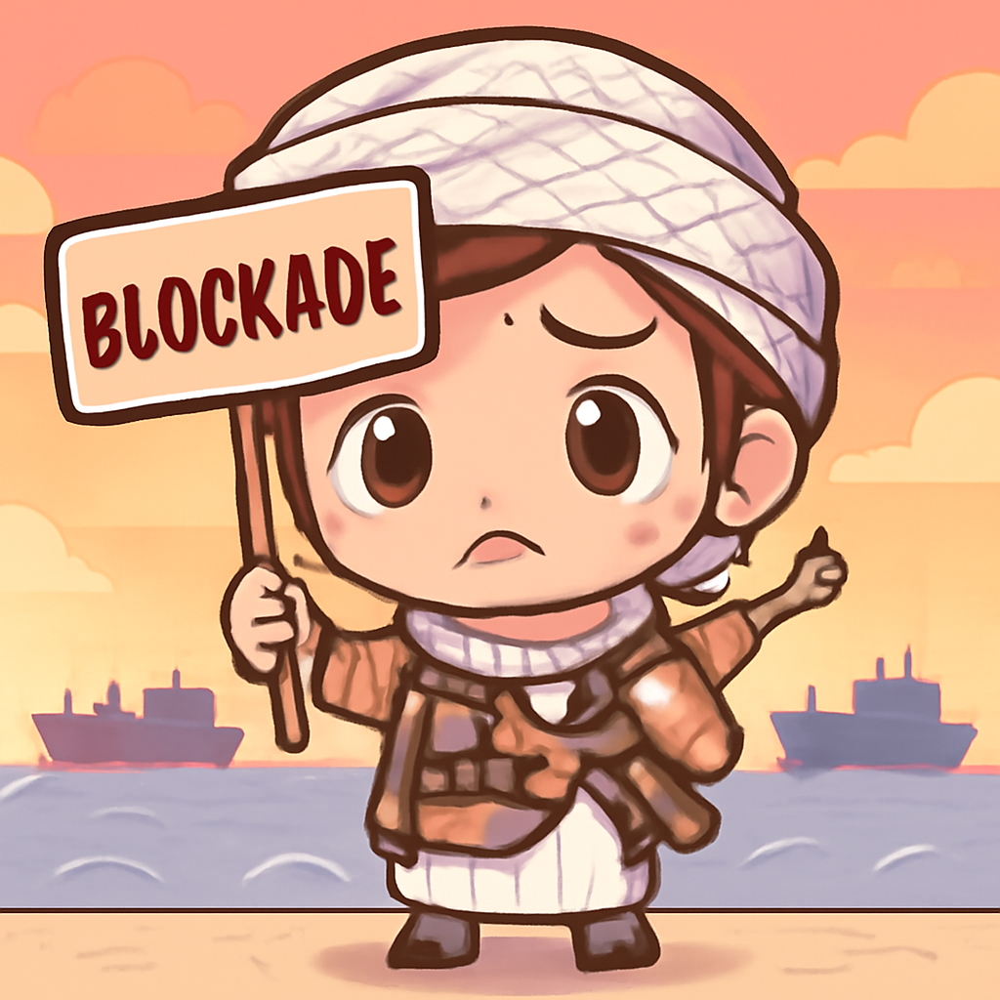

其一 · 烏克蘭基輔 · 泽連斯基罷免軍隊指揮官
烏克蘭總統因抗議活動罷免高層指揮
在烏克蘭基輔，總統泽連斯基罷免了軍隊指揮官奧列克桑德·西爾斯基，原因是近日對他及國防部長的抗議活動。這一變動可能會影響烏克蘭的戰略方向，尤其是在持續的俄烏戰爭中。看來，政治的風雲變幻就像天氣，說變就變。
🔗 原始新聞 ↗
2026-07-22 · 以古觀今，以笑抗愁
烏克蘭總統因抗議活動罷免高層指揮
在烏克蘭基輔，總統泽連斯基罷免了軍隊指揮官奧列克桑德·西爾斯基，原因是近日對他及國防部長的抗議活動。這一變動可能會影響烏克蘭的戰略方向，尤其是在持續的俄烏戰爭中。看來，政治的風雲變幻就像天氣，說變就變。
🔗 原始新聞 ↗
加薩地區空襲致多人喪生，情勢緊張
在加薩，以色列空襲導致12人喪生，其中包括一個六口之家。以色列軍方表示此次攻擊是針對哈馬斯的行動，然而這樣的事件無疑加劇了地區緊張局勢。看來，和平的願望比烤餅還難實現。
🔗 原始新聞 ↗
美國對加拿大的關稅大幅上升，貿易緊張加劇
在華府，特朗普宣布對加拿大徵收50%的關稅，這一舉動使得兩國之間的貿易緊張情勢進一步升級。面對這樣的政策，加拿大政府及民眾已經做好準備，似乎未來將會有更多的貿易戰劇碼。唉，打貿易戰就像打遊戲，總是有人輸得慘兮兮的。
🔗 原始新聞 ↗
胡塞武裝行動加劇美伊戰爭風險

在也門，胡塞武裝宣佈對沙烏地阿拉伯的紅海封鎖，這可能為美伊之間的緊張局勢增加新的火藥味。這一動作不僅會影響地區安全，還可能擴大戰火的範圍，讓人擔心未來的局勢。希望大家能夠和平共處，不然我們的地球會變得太熱了。
🔗 原始新聞 ↗
法國立法限制未成年人的社交媒體接觸
在巴黎，法國新法案將禁止未滿15歲的青少年使用某些社交媒體帳號，這是歐洲國家首次採取這樣的措施。這項法律旨在保護青少年免受不當內容的影響，或許這對於青少年的網絡安全來說是一個好的開始。看來，社交媒體的世界又多了一道護欄。
🔗 原始新聞 ↗